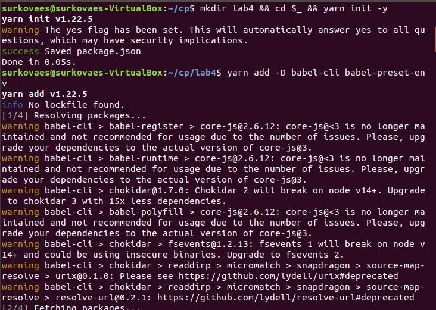
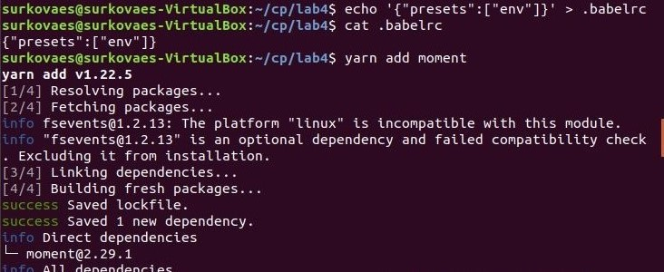
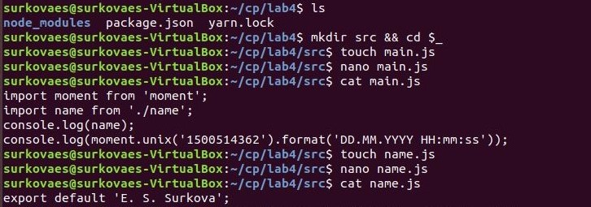
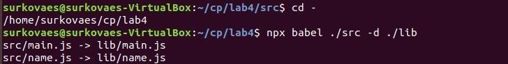
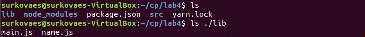
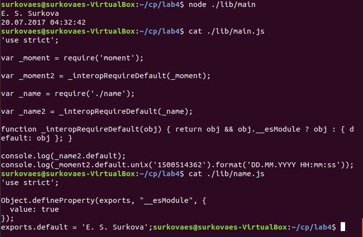

Лабораторная работа 4
Развёртывание проекта на JavaScript, включающего модули
Автор: Елизавета Суркова 2ИВТ(2)
Ссылка на папку с файлами
1. Создание нового проекта
2. Добавление зависимостей babel-cli и babel-preset-env в раздел девелоперских зависимостей

3. Создание простейшей настройки babel в файле .babelrc
4. Добавление к проекту библиотеки moment для работы с датами/временем

5. Размещение файлов main.js и name.js, находящихся в отношении нативной модульности, в папке ./src

6. Выполнение команды транспиляции

7. Получена папка lib с транспилированными файлами

8. Содержимое полученных файлов
